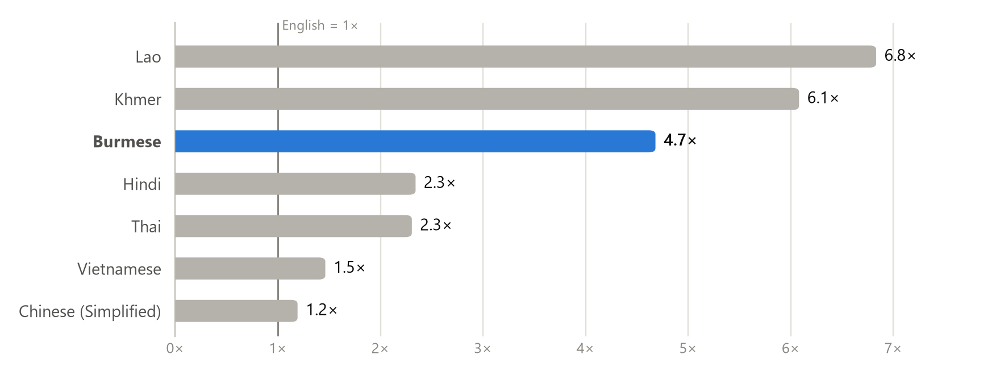
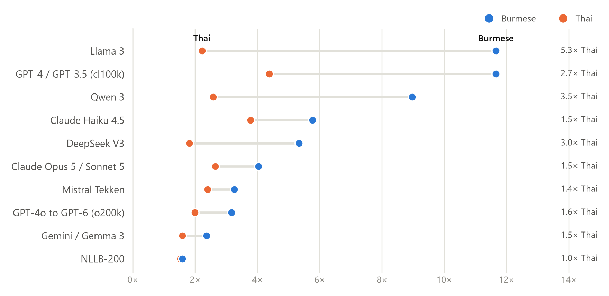
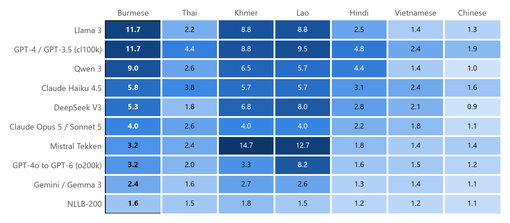
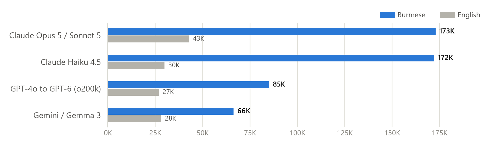

AI models charge by the token. We counted how many tokens 10 tokenizers, used by GPT, Claude, Gemini, Llama, Qwen and others, need for the same 1,012 sentences in English, Burmese and six other Asian languages.

Across the region, Burmese sits in the expensive group. With the typical tokenizer it needs 4.7× the tokens of English, twice Thai (2.3×) and Hindi (2.3×), and far more than Vietnamese (1.5×) or Chinese (1.2×). It is costlier than Thai, Hindi, Vietnamese and Chinese with every tokenizer we tested.
Thai is the fairest comparison: a Southeast Asian language with its own script and no spaces between words, just like Burmese. Yet every tokenizer is kinder to Thai, and the gap is widest for older and English- or Chinese-centred vocabularies: with Llama 3, Burmese costs 5.3× as much as Thai; with Qwen 3, 3.5×. Only NLLB-200, a translation model built for 200 languages, treats the two almost equally.


The multiplier compares a tokenizer with itself. To compare providers, count the absolute tokens for the same text: that's what you pay for (times each provider's price per token).

| Tokenizer | English tokens | Burmese tokens | Burmese ÷ English |
|---|---|---|---|
| Gemini / Gemma 3 | 28,125 | 66,306 | 2.4× |
| GPT-4o to GPT-6 (o200k) | 26,878 | 85,034 | 3.2× |
| Claude Haiku 4.5 | 29,894 | 172,181 | 5.8× |
| Claude Opus 5 / Sonnet 5 | 42,927 | 172,929 | 4.0× |
Gemini needs the fewest tokens for Burmese. Claude needs about 2.0× as many as GPT and 2.6× as many as Gemini. Claude's newer tokenizer (Opus 5 / Sonnet 5) shows a lower multiplier than Haiku 4.5 only because it uses more tokens for English; for Burmese the two are almost identical.
Tokenizers learn their vocabulary from training data that is mostly English, code and a few large languages. A script that is rare in that data gets few dedicated tokens, so its text is split into small fragments, down to raw UTF-8 bytes. Each Burmese character takes 3 bytes, so byte-level fallback is especially costly. The word မြန်မာ ("Myanmar"), 6 characters and 18 bytes, needs:
| Tokenizer | GPT-4 (cl100k) | Qwen 3 | GPT-4o to GPT-6 | Gemini / Gemma 3 | NLLB-200 |
|---|---|---|---|---|---|
| Tokens for မြန်မာ | 12 | 9 | 3 | 3 | 1 |
mtb run --corpus your_folder/ on your real documents.Data: FLORES-200 devtest (1,012 sentences from Wikinews, Wikijunior and Wikivoyage, professionally translated; CC BY-SA 4.0). Each language's sentences are joined by newlines and tokenized without special tokens. The multiplier is tokens(language) ÷ tokens(English) for the same tokenizer. Models whose counts are identical in every language share a tokenizer and are counted once (10 distinct tokenizers): GPT-5, GPT-5.5, GPT-6 Sol and Phi-4 mini match o200k; Gemini 2.5 and 3.8 Flash match Gemma 3; Claude Sonnet 5 matches Opus 5. Claude, GPT-5+ and Gemini were counted with their official token-counting APIs, with the fixed message framing subtracted; Llama 3, Gemma 3 and Mistral tokenizers come from public mirrors of the official files. Limitations: news and wiki text only; Unicode Burmese only (Zawgyi not measured); token efficiency is not answer quality; provider tokenizers can change with new models. Run date: 2026-09-29.
Code and full data: github.com/aungthuhein2005/myanmar-tokenizer-bench (MIT).